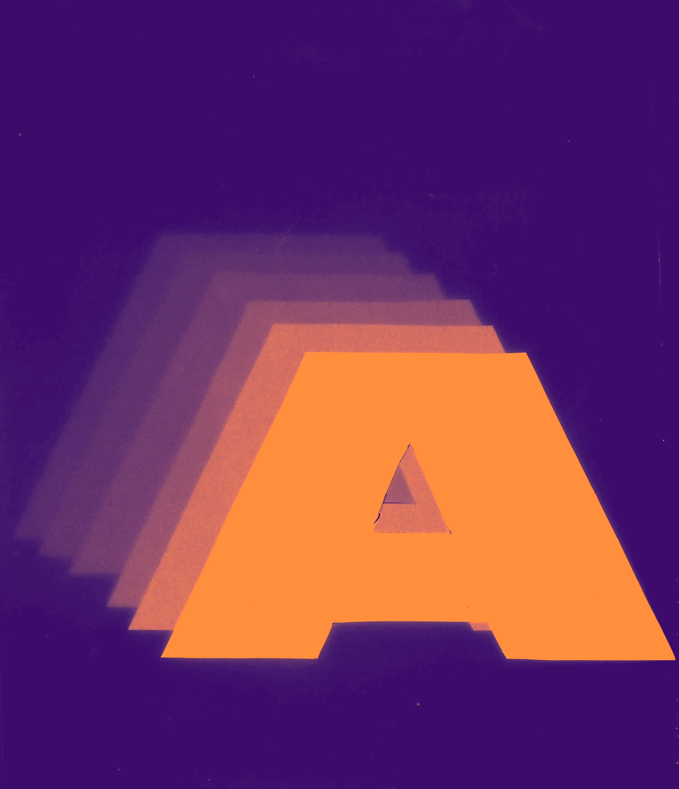
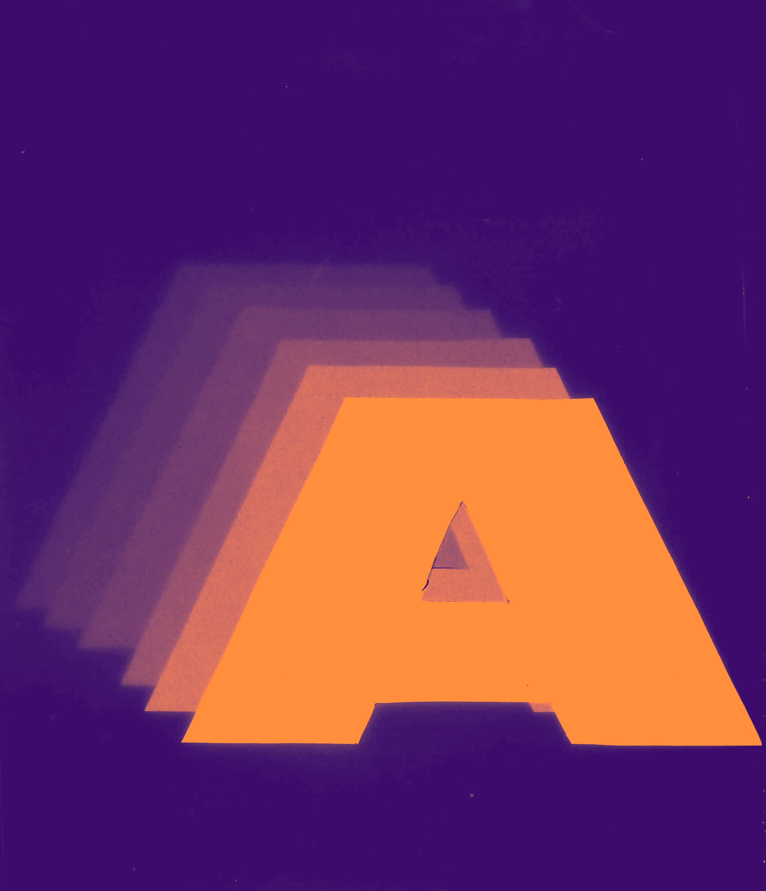

Wer in London beginnt, bewusst zuzuhören, entdeckt plötzlich Details, die sonst verborgen bleiben. Dieses
Buch spielt mit dieser selektiven Wahrnehmung: Die Seiten zeigen die Perspektiven wilder Tiere, doch die
Bilder verraten nicht, welchem Tier sie gehören. Tiergeräusche werden zum Leitmotiv, Dialoge beginnen mit
Lauten statt Namen, Bild und Text verschmelzen zu einem akustischen Fluss. Wiederholungen und reduzierte
Typografie schaffen Rhythmus und Orientierung.
So wird die Stadt zu einem Spiel aus Hören, Sehen und Vorstellen
– ein abstraktes, lebendiges London.
 
